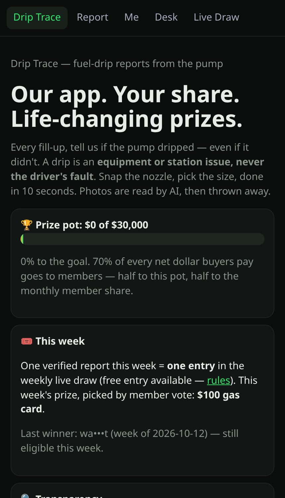
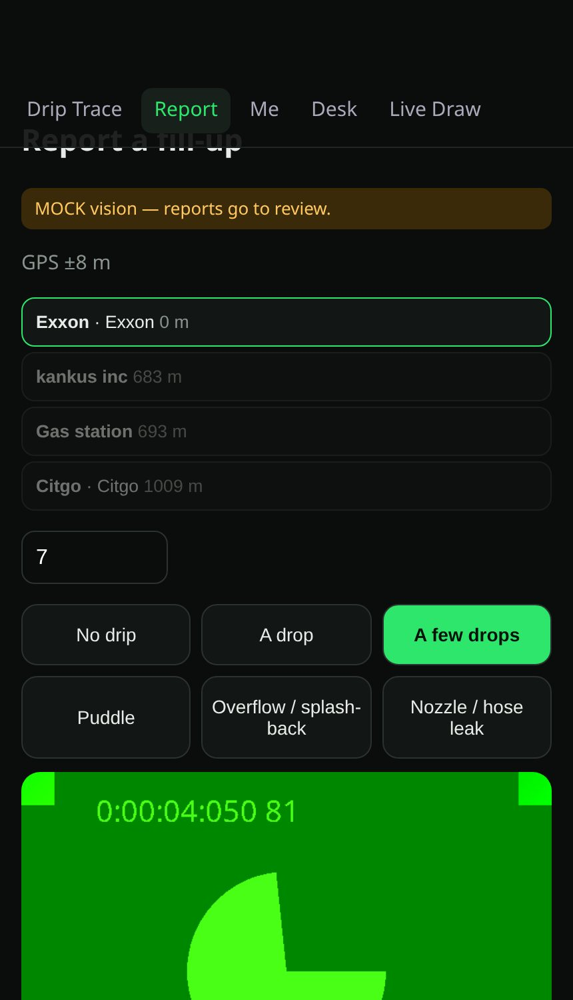
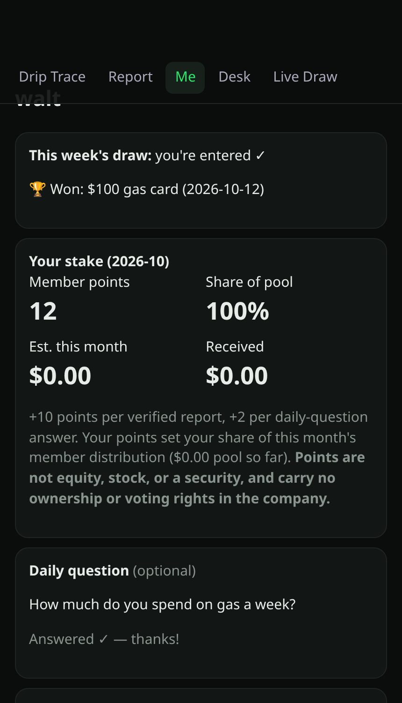
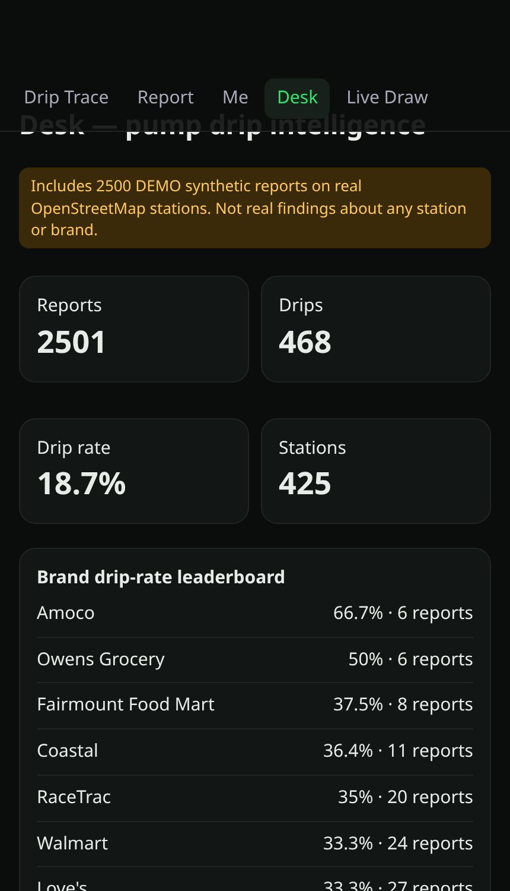
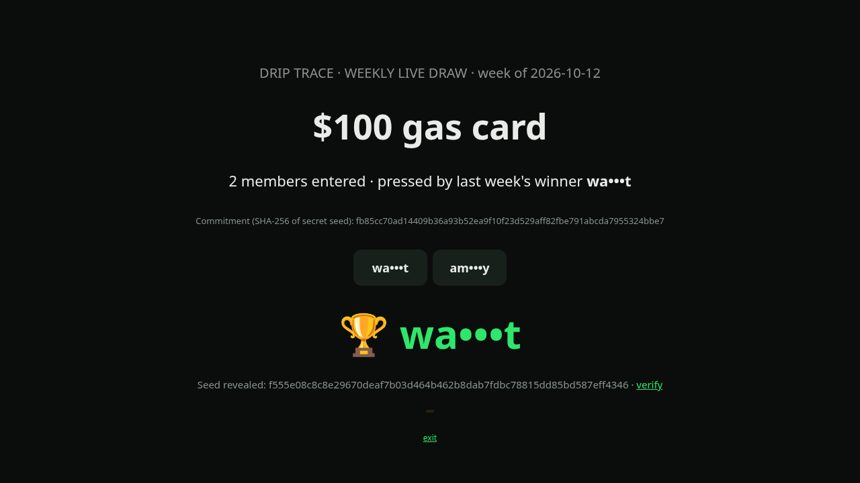

Project overview
Drip Trace — fuel-drip reports from the pump
At every fill-up, drivers report in about 10 seconds whether the pump dripped (no drip, a drop, a few drops, a puddle, overflow or a nozzle leak). The nearest station comes from GPS, a photo of the nozzle is checked by Grok vision and then thrown away. A drip is an equipment issue, never the driver's fault.
About this page. This app needs its Node.js server (database, AI vision/judge, payments), so it can't run on GitHub Pages. This page explains it with screenshots taken from a local test run using demo data. The full source is in this repository; see README.md.
What it does
- Fast report flow with GPS station pick, pump number, drip size and nozzle photo
- Anti-fraud: within 75 m of the station, rate limits, duplicate-photo hashing, review queue
- Members get 70% of net revenue: a weekly prize pot and a monthly points-based share (not equity)
- Weekly live draw with a published SHA-256 commitment and a public audit page anyone can recompute
- Buyer Desk: brand drip-rate leaderboard, station map, trends, sample report, quote form
- Ships with 2,500 clearly labelled DEMO synthetic reports on real OpenStreetMap stations
Screenshots





How it's built
Node.js + Express, SQLite (sql.js), vanilla JS PWA in public/, xAI vision, Stripe (Checkout + Connect). Docker / Render config included.
Run it locally
npm install ADMIN_TOKEN=choose-your-own PORT=8788 node server.js # see .env.example for XAI / Stripe settings